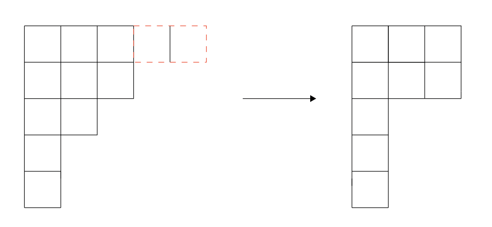
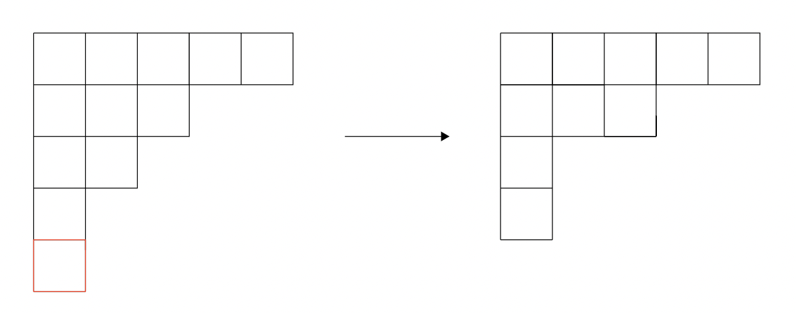

Let $n$ be a positive integer; and $(a^{a'}, b^{b'}, c^{c'}, \ldots, i^{i'})$ be an ordered partition for $n$.
In RIT, only a certain type of vertical move is allowed: some cells from a row $r_i$ may be deleted, if the length of changed $r_i \geq$ length of $r_{i + 1}$. However, if $i + 1$ deems to be the last row of the young diagram, this condition would require to be ignored.
The JavaScript program backing the interactive web-version aids from memoised Sprague-Grundy value and several data structure algorithms.
Moves
Following the description above, a visual description of possible moves are given below:
(a) Regular Cell Removal:

(b) Exception (only applies to the last row):

More
Some research are already waiting on publication approval - please contact Prof. Gottlieb for related queries. Many thanks to Dawood Khatana for sharing the pre-print of the research they have done on IRT.